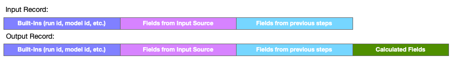

Group and Sort Step
This step groups and re-orders the entire record set processed by the stage. Usually the order of records in a stage's input is somewhat indeterminate, depending largely on the specific data source's behavior. This step buffers the records, groups, sorts, and optionally adds calculated fields (for example, a running total), before emitting each modified record to the next step.
Configuration
To configure a Group and Sort step, you specify the data fields to be used for grouping, sorting and (optionally) for calculations.
- Group By - like values will be grouped together in the re-ordered records. Calculated fields, such as running totals, start over for each group.
- Sort By - specified additional sorting to be applied within each group.
- Calculated Fields - optional fields that may be appended to the emitted records, includes:
- Running Total - for the specified field, accumulates a running sum for each group.
- New Group - a true/false flag that identifies the first record of a new group.
- Previous - for the specified field, emits the previous value of the field in the grouped and re-ordered records.
- Change Previous - for the specified field, emits the change from previous value of the field in the grouped and re-ordered records.
See also: About Stage Steps